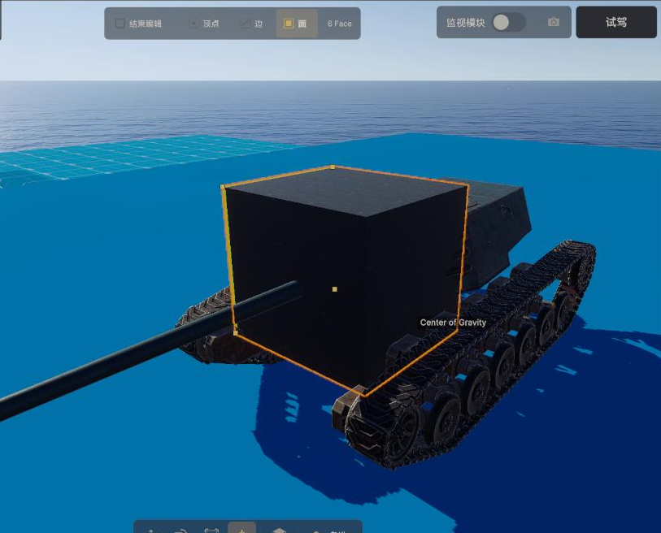

多边形编辑工具
中文 | English
在仓库根目录运行以下命令，用本机 Unity MCP 回放本页示例。
python Docs/Manual/manual/tools/tutorials.py run poly-edit-tool
用多边形编辑工具可以直接在坦克工坊里改动载具的网格，不必离开工坊。你在挂到物品上的网格上做编辑，结束后会写回该物品。
准备 Editable 物品
- 打开坦克工坊（Tank Workshop），进入 Item。
- 搜索 Editable。
- 把 Editable 物品挂到载具上。
- 在工作区里选中这个物品。
进入编辑模式
- 点击 编辑（Edit）。旧版界面里这个按钮叫 Edit Polygons。
- 会出现工具栏（tool shelf）。按你要改的部分选择 Face、Edge 或 Vertex。
移动、旋转、缩放几何体
先选中要改的几何体，再按需要使用 Move、Rotate 或 Scale 手柄。哪种选择方式更容易抓到你要的部件，就在 Face、Edge、Vertex 之间切换。
挤出（Extrude）一个面
- 把工具栏切到 Face，选中一个面。
- 设置 Extrude Distance 为你想要的厚度。
- 点击 Extrude。这个面会沿它自己的法线方向推出，并在四周生成新的侧面。

倒角（Bevel）一条边
- 把工具栏切到 Edge，选中一条边。
- 设置 Bevel Amount 为你想要的宽度。
- 点击 倒角（Bevel）。这条边会被一圈倒角面取代。
结束并验证
- 点击 End Edit。你会回到物体模式，编辑过的网格会写入所选物品。
- 保存载具。
- 重新加载载具，确认形状符合预期。
点击展开 MCP 操作点击收起 MCP 操作
parent 是独立测试车上有空槽的父配件 ruleGuid。该示例用实际 ProBuilder 操作选面、挤出并读回保存网格。
[
{
"tool": "vehicle_equip",
"arguments": {
"itemGuid": "1e8e9f60-3ed6-43b0-aa67-b8bd65f18cae",
"slotIndex": 0,
"isMain": false,
"parentRuleGuid": "${parent}"
},
"expect": {
"contains": "built=True"
},
"capture": {
"poly": {
"regex": "ruleGuid=([\\w-]+)"
}
}
},
{
"tool": "vehicle_focus",
"arguments": {
"ruleGuid": "${poly}"
},
"expect": {
"contains": "ok focused"
}
},
{
"tool": "invoke",
"arguments": {
"path": "static:ShanghaiWindy.Core.AssetBundleManager/LuaEnv/DoString",
"args": [
"local mode=CS.ShanghaiWindy.Core.GameModeManager.Instance:GetGameMode()\nlocal binding=assert(mode:GetBinding(\"${poly}\"))\nmode:EditMesh(binding.reference.proBuilderMesh)\nreturn mode.CurEditType:Get():ToString()",
"docs-workshop",
"null"
]
},
"expect": {
"contains": "ProBuilder"
}
},
{
"tool": "ui_click",
"arguments": {
"name": "gen_PbFaceButton"
},
"expect": {
"contains": "Clicked"
}
},
{
"tool": "invoke",
"arguments": {
"path": "static:ShanghaiWindy.Core.AssetBundleManager/LuaEnv/DoString",
"args": [
"local pb=CS.ShanghaiWindy.Core.GameModeManager.Instance:GetGameMode().ProBuilder\nlocal faces=pb.selectedMesh.faces:GetEnumerator()\nassert(faces:MoveNext())\nlocal list=assert(pb:GetSelectedFace())\nlist:Clear()\nlist:Add(faces.Current)\nlocal count=pb.selectedMesh.faceCount\npb:Extrude(0.25)\nassert(pb.selectedMesh.faceCount>count)\nreturn \"Extruded selected face\"",
"docs-workshop",
"null"
]
},
"expect": {
"contains": "Extruded selected face"
}
},
{
"tool": "ui_click",
"arguments": {
"name": "gen_PbObjectButton"
},
"expect": {
"contains": "Clicked"
}
},
{
"tool": "invoke",
"arguments": {
"path": "static:ShanghaiWindy.Core.AssetBundleManager/LuaEnv/DoString",
"args": [
"local mode=CS.ShanghaiWindy.Core.GameModeManager.Instance:GetGameMode()\nlocal rule=assert(mode:GetPickedRule())\nlocal got,bytes=rule:TryGetCustomBuffer()\nassert(mode.CurEditType:Get():ToString()==\"Object\" and got and #bytes>0)\nreturn \"Edited mesh stored in rule\"",
"docs-workshop",
"null"
]
},
"expect": {
"contains": "Edited mesh stored in rule"
}
}
]
网格类型与相关控制
当前网格类型有 Visual、VisualHitBox、HitBox、InternalModule、VisualInternalModule。碰撞体是否启用与网格类型分开设置。材质和伤害相关控制取决于网格类型，所以某个物品上能看到的控制项在另一个物品上不一定适用。
输入格式
载具网格支持的模型格式是 GLB，具体要求见 GLB 导入规范。OBJ 不在该规范的覆盖范围内。